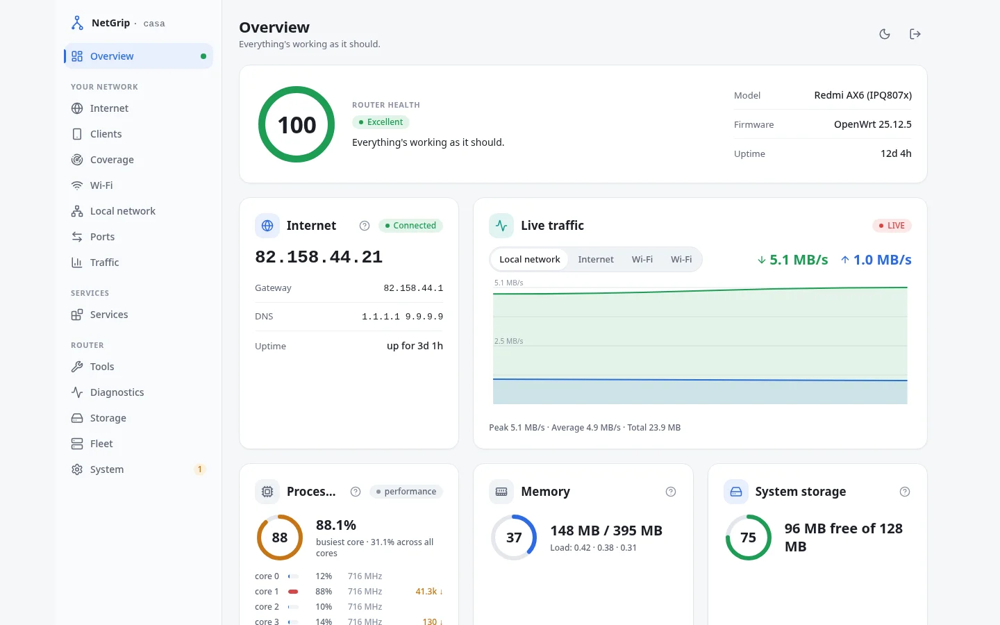
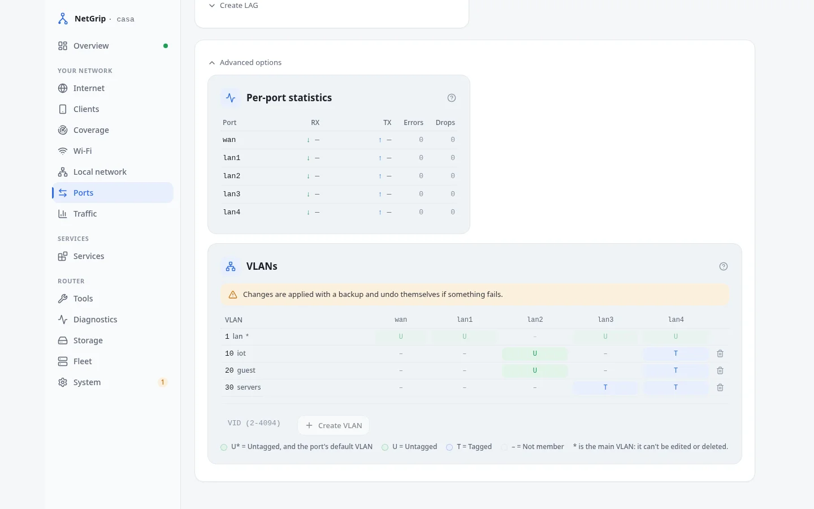
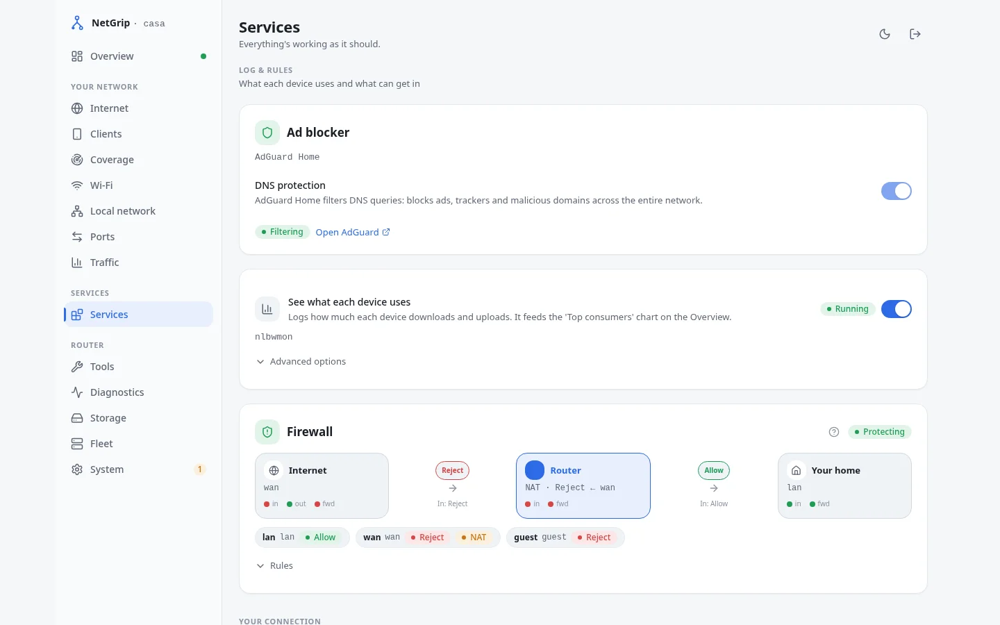
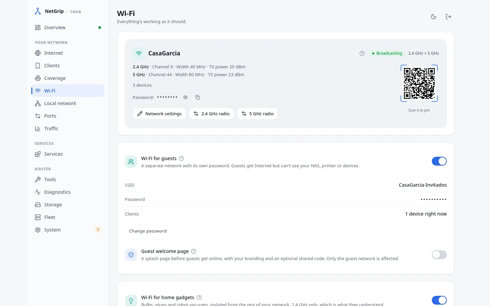
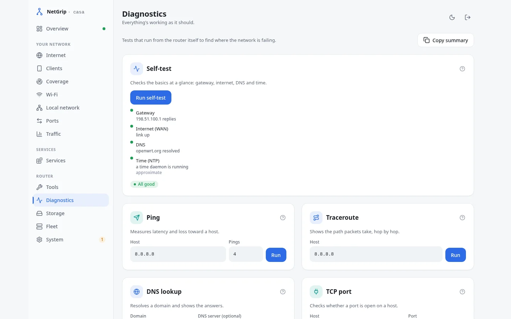
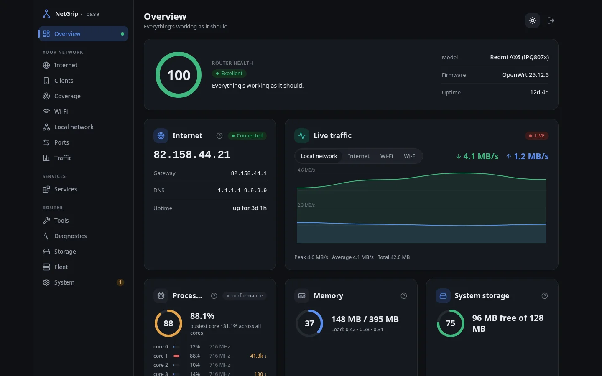

WiFi sin líos
Redes de invitados e IoT con dos toques, QR incluido.
Software libre · AGPL · Hecho por la comunidad
Tu router con OpenWrt puede hacer de todo: VPN, WiFi de invitados, priorizar videollamadas… NetGrip lo convierte en algo que cualquiera de casa puede usar: sin manuales, sin miedo a romper nada.
La demo es de juguete: datos de ejemplo, nada se aplica de verdad.

100% libre (AGPL)
Para siempre. Sin versión «pro».
Sin cuentas ni nube
Todo ocurre en tu router, en tu red.
Cero funciones nuevas
Solo una interfaz amable sobre OpenWrt.
Community-driven
Las prioridades las marca la comunidad.
Qué es
OpenWrt es increíblemente capaz: VPN, cortafuegos, priorización de tráfico, redes separadas… está todo ahí dentro.
Sus herramientas clásicas, como LuCI, son potentes y completas, pero están pensadas para gente técnica. NetGrip es una capa amable encima: las mismas funciones, el mismo router, explicadas en tu idioma.
Amable =
Funcionalidades
Redes de invitados e IoT con dos toques, QR incluido.
Entra a tu casa desde fuera escaneando un código QR.
Dispositivos, consumo y tráfico en vivo, con gráficos.
Zonas y reglas explicadas con un diagrama, no con tablas.
Videollamadas fluidas aunque alguien suba 200 fotos.
Acceso remoto sin pelearte con IPs que cambian.
Snapshots antes de tocar nada, y plantillas listas para usar.
¿Varios routers? Nuestra app hermana los gestiona en conjunto.
Redes por cable separadas, con los puertos reales de tu placa y la de acceso protegida.
El promedio engaña: mira el núcleo más cargado y los paquetes que se pierden.
Ping, traceroute y DNS con resultados legibles, y un autochequeo que dice el porqué.
Todo lo visible desde fuera, forwards y listeners incluidos; lo creado fuera, en solo lectura.
El router se descubre solo en Home Assistant: sensores de estado y tráfico, interruptores que actúan (WiFi de invitados, banIP, IPv6, SQM) y botón de reinicio. Desactivado por defecto.
banIP integrado: feeds de listas negras, listas locales y un monitor que bloquea lo que insiste, con aviso cuando la RAM aprieta.
Endpoint MCP con 10 herramientas de solo lectura (estado, clientes, WiFi, WAN, SNMP) para que un asistente lea tu router en nuestro vocabulario. Desactivado por defecto, con token propio.
VLANs, SNMP, storm control y ACLs de MAC tras un check en Ajustes: potencia real fuera de vista hasta que la pides, y un menú que solo muestra lo que tu equipo tiene.
Canal recomendado a partir de la utilización real del aire, aplicable en un clic, y horarios semanales por red: la de invitados, fuera de madrugada.
Capturas





Capturas reales del modo demo.
Comunidad
NetGrip es AGPL y lo seguirá siendo: sin planes de pago, sin funciones capadas, sin sorpresas. El rumbo lo decide la comunidad en GitHub: issues, ideas, traducciones y código.
Abre un issue con ese fallo que te persigue o la función que echas de menos.
NetGrip ya habla español e inglés. Añade tu idioma y ayuda a más gente.
React en el front, Go en el router. Los PRs son bienvenidos, grandes o pequeños.
¿Tienes varios routers? NetPulse, nuestra app hermana, los gestiona en conjunto.
¿Te sirve NetGrip? Una estrella en GitHub ayuda mucho y no cuesta nada.